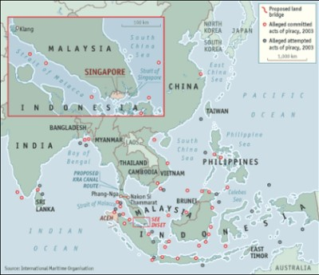

|
|
|
|
|
|
|
|
|
|
|
|
|
|
||
|
|
||||
|
|
|
মিয়ানমারের সাফ্রোন-বিপ্লব ও বিশ্বরাজনীতি দিনমজুর
জাতিসংঘের
হিসাব অনুসারে,
মিয়ানমারে ৫০ মিলিয়ন
অধিবাসীকে তাদের মাসিক আয়ের ৭০% ই ব্যয় করতে হয় খাদ্য কিনতে।
সাম্প্রতিক জ্বালানির
মূল্য
বৃদ্ধি তাদের অন্তত ১০ মিলিয়নের জন্য ছিল একেবারেই অসহনীয়। অন্তরালের নায়কসমূহঃ
মিয়ানমার
আয়তনে
প্রায়
জর্জ ডব্লিও বুশের টেক্সাসের সমান।
মিয়ানমারের ট্রাজেডি হচ্ছে এই যে,
এখানকার
জনগণ
একটি নাটকের পাত্রপাত্রি বা সরঞ্জাম হিসাবে ব্যবহৃত হয়েছে,
যে
নাটকের
স্ক্রিপ্ট রচিত হয়েছে ওয়াশিংটনে- ন্যাশনাল এনডাউমেন্ট ফর ডেমোক্রেসি (NED),
জর্জ
সরস
ওপেন সোসাইটি ইনস্টিটিউট,
ফ্রিডম
হাউস এবং জিন শার্পের আলবার্ট আইনস্টাইন
ইনস্টিটিউট দ্বারা।
এই
আলবার্ট আইনস্টাইন ইনস্টিটিউট ইউএস ইন্টিলিজিন্সের একটি
অ্যাসেট হিসাবে বিবেচিত,
যেটি
বিশ্বব্যপি যুক্তরাষ্ট্রের কৌশলগত বৈদেশিক এজেন্ডা
বাস্তবায়নে শাসন ব্যবস্থা পরিবর্তনে (রক্তপাতবিহীন) কাজ করে যাচ্ছে। বাস্তবে ইউএস স্টেট ডিপার্টমেন্ট উল্লেখযোগ্য সংখ্যায় সরকার-বিরোধি সংগঠনের প্রধান নেতাদের নিযুক্ত করেছে ও প্রশক্ষিত করেছে। মিয়ানমারে কর্মকান্ড পরিচালনার জন্য স্টেট ডিপার্টমেন্ট কম করে হলেও NED কে বছরে ২.৫ মিলিয়ন ডলার অর্থায়ন করেছে। প্রকাশিত রিপোর্টসমূহ থেকে যতখানি জানা যায়, শাসন-ব্যবস্থা পরিবর্তনের এই সাফ্রোন বিপ্লব অনেকাংশেই মিয়ানমারে সীমান্তবর্তী এলাকা থাইল্যান্ডের চাইং মাই থেকে পরিচালিত হয়েছে। কিছু কিছু ক্ষেত্রে মিয়ানমারে বিপ্লবকে সংগঠিত করার কাজে যাওয়ার আগে কর্মীরা সরাসরি যুক্তরাষ্ট্রে প্রশক্ষিত হয়েছে। NED স্বীকার করেছে যে তারা প্রধান বিরোধি মিডিয়া 'নিউ এরা জর্ণাল', 'Irrawaddy' এবং 'ডেমোক্রেটিক ভয়েস অব বার্মা রেডিও' কে অর্থায়ন করেছে। কেন মিয়ানমারঃ
স্বভাবতই একটি
প্রশ্ন
চলে
আসে যে,
মিয়ানমারের
শাসন-ব্যবস্থা পরিবর্তনে যুক্তরাষ্ট্রের এত আগ্রহ কেন?
গণতন্ত্র,
ন্যায় ও
মানবাধিকার প্রতিষ্ঠায় যুক্তরাষ্ট্র আন্তরিক বলেই মিয়ানমারের
সামরিক
শাসন-ব্যবস্থার পরিবর্তন চায়- এ ধারণা আমরা প্রথমেই বর্জন করতে পারি।
ইরাক ও
আফগানিস্তানের ঘটনাপ্রবাহের দিকে তাকালে- গণতন্ত্র প্রতিষ্ঠার প্রচারণার আড়ালে
যুক্তরাষ্ট্রের অন্যসব উদ্দেশ্য হাসিলের বিষয়টি পরিস্কার হয়। বিশ্বব্যপি 'ভূ-রাজনৈতিক নিয়ন্ত্রন' প্রতিষ্ঠা এর উত্তর হতে পারে। এক্ষেত্রে নিয়ন্ত্রনটি হচ্ছে- পারস্য উপসাগর থেকে দক্ষিণ চীন সাগর পর্যন্ত কৌশলগত সমুদ্র পথটির নিয়ন্ত্রন। আর মিয়ানমারের উপকূলকে নিয়ন্ত্রন করতে পারলে, দুনিয়ার অন্যতম প্রধান কৌশলগত সমুদ্রপথ 'মালাক্কা প্রণালী' তে নৌ-প্রবেশাধিকার নিশ্চিত হয়। মালাক্কা প্রণালীটি হচ্ছে মালয়েশিয়া ও ইন্দোনেশিয়ার অন্তবর্তী জাহাজ চলাচলের একটি সমুদ্র রুট বা পথ। সেপ্টেম্বর ১১, ২০০১ থেকেই সাম্ভাব্য সন্ত্রাসী আক্রমন প্রতিহত করবার ধুয়া তুলে পেন্টাগণ উক্ত অঞ্চলে সামরিকীকরণের চেস্টা চালিয়ে যাচ্ছে। যুক্তরাষ্ট্র এরইমধ্যে ইন্দোনেশিয়ার সর্বোত্তর পয়েন্ট Banda Aceh এ সুলতান ইস্কান্দার মুদা বিমান বাহিনী ঘাটি স্থাপন করেছে। মিয়ানমারসহ এই অঞ্চলের সরকারসমূহ অবশ্য এখানে মার্কিন সামিরিকীকরণকে দৃড়ভাবে প্রত্যাখান করছে। মানচিত্রের দিকে এক পলক তাকালেই মিয়ানমারের কৌশলগত গুরুত্ব সম্পর্কে একটি ধারণা পাওয়া যায়।
 ভারত মহাসাগর ও প্রশান্ত মহাসাগরের মধ্যে যোগাযোগ-স্থাপনকারী মালাক্কা প্রণালী পারস্য উপসাগর ও চীন সাগরের মধ্যে ক্ষুদ্রতম সমুদ্র রুট। চীনের আমদানীকৃত তেলের ৮০% এর বেশি এই মালাক্কা প্রণালী দিয়ে তেলবাহী জাহাজ মারফত চীনে পৌঁছে। এর সরুতম অংশটি হচ্ছে সিঙ্গাপুর প্রণালীর ফিলিপস চ্যানেল- যা মাত্র ১.৫ মাইল প্রশস্ত। এই সরুতম চ্যানেলটি দুনিয়ার সবচেয়ে দ্রুততম গড়ে ওঠা এনার্জি মার্কেট চীন ও জাপানের জন্য সবচেয়ে গুরুত্বপূর্ণ সমুদ্র পথ, এখান দিয়ে দৈনিক ১২ মিলিয়ন ব্যারেল তেল তেলবাহী জাহাজে করে পার হয়ে যায়। যদি প্রণালীটি বন্ধ হয়ে যায়, তবে দুনিয়ার অর্ধেক তেলবাহী জাহাজকে অনেকবেশি সমুদ্র পথ পাড়ি দিতে হবে, ফলে বিশ্বব্যপি জলপথে পণ্য-পরিবহনের খরচ অনেকগুনে বেড়ে যাবে। প্রতি বছর ৫০০০০ এর বেশি পণ্যবাহী ও তেল বাহী জাহাজ এই মালাক্কা প্রণালী দিয়ে যাতায়াত করে। মিয়ানমার থেকে ইন্দোনেশিয়ার Banda Aceh পর্যন্ত এলাকাটি দ্রুতই দুনিয়ার অন্যতম গুরুত্বপূর্ণ চোকপয়েন্ট হয়ে উঠছে, কেননা এই চোকপয়েন্টটি নিয়ন্ত্রন করতে পারলে চীনের এনার্জি সাপ্লাইকেও নিয়ন্ত্রনের সম্ভাবনা তৈরি হয়। তাই এই অঞ্চলের কৌশলগত গুরুত্ব বেইজিং হারিয়ে ফেলেনি। যুক্তরাষ্ট্র ২০০৩ সাল নাগাদ মধ্যপ্রাচ্যে জ্বালানি তেলের উপর একচ্ছত্র আধিপত্য বিস্তার করলে, চীন অনেকবেশী মিয়ানমারের দিকে ঝুকে পড়ে। চীনের এই মিয়ানমারের সাথে ঘনিষ্টতা মানবাধিকার সংস্লিষ্ট নয়, বরং এর সাথে এনার্জি ও সামরিক নিরাপত্তার বিষয়টি জড়িত। সাম্প্রতিক বছরগুলোতে বেইজিং মিয়ানমারকে বিলিয়ন বিলিয়ন ডলারের সামরিক সরঞ্জাম দিয়েছে- যার মধ্যে আছে ফাইটার, গ্রাউন্ড অ্যাটাক ও ট্রান্সপোর্ট, ট্যাংক, আরমার্ড মোটরযান, নৌবহর, এয়ার মিসাইল। চীন মিয়ানমারে পাকা রাস্তা, রেললাইন স্থাপন করে দিয়েছে এবং বিনিময়ে মিয়ানমারে তাদের মিলিটারি ট্রুপসের প্রবেশের অনুমতি পয়েছে। ইন্ডিয়ান প্রতিরক্ষা সূত্রমতে জানা যায়, চীন মিয়ানমারের কোকো দ্বীপে একটি ইলেকট্রনিক নজরদাড়ি কেন্দ্র স্থাপন করেছে এবং ভারত মহাসাগরে নিয়ন্ত্রন প্রতিষ্ঠার উদ্দেশ্যে একটি নৌঘাটি নির্মাণ করছে। প্রকৃতপক্ষে, মিয়ানমার হচ্ছে চীনের ভাষায় 'মুক্তার মালা'; এবং মালাক্কা প্রণালীতে যুক্তরাষ্ট্রের নিয়ন্ত্রন প্রতিষ্ঠার প্রচেস্টাকে মোকাবেলা করার জন্য কৌশলগত ভাবে মিয়ানমারকে চীনের প্রয়োজন। উপরন্তু, মিয়ানমার, কি উপকূলবর্তী অংশ- কি উপকূল দূরবর্তী অংশ, জ্বালানি-খনিজ সম্পদে সমৃদ্ধ। মানবতাবাদি ত্রাণ-কর্মকান্ডের অন্তরালেঃ ডিসেম্বর ২৬, ২০০৪ সালে ইন্দোনেশিয়া ও এর আশেপাশে সংঘটিত সুনামির জরুরি ত্রাণ-সামগ্রি নিয়ে ইউএস প্যাসিফিক নৌবহর দক্ষিণ এশিয়ায় অগ্রসর হয়েছিল। সুনামির ত্রাণ-কার্যক্রমকে সামনে রেখে- ইউএস ন্যাভি থাইল্যান্ডের সিয়াম উপসাগরে অবস্থিত ইউ-টাপাও ঘাটিতে অবস্থান নেয়। এটি ভিয়েতনাম যুদ্ধের সময় যুক্তরাষ্ট্রের একটি প্রধান ফ্রন্ট লাইন ঘাটি ছিল। সুনামির জরুরি অবস্থা অতিবাহিত হলে থাইল্যান্ডের নির্বাচিত সরকার ইউএস ন্যাভির ইউ-টাপাও ঘাটি থেকে প্রস্থান চেয়েছিল। ২০০৬ সালের সেপ্টেম্বরে থাইল্যান্ডে সামরিক অভ্যুত্থান ঘটে, নির্বাচিত সরকার হয় বিতাড়িত, সংসদ বিলুপ্ত করা হয়, সংবিধানকে করা হয় স্থগিত ও যুক্তরাষ্ট্র সমর্থিত সামরিক স্বৈরতন্ত্র চালু হয়।
এই
অভ্যুত্থানের পর,
বুশ
প্রশাসনের তরফ থেকে কোনরূপ অভিযোগ উত্থাপিত হয়নি বা কোনরূপ আন্তর্জাতিক অবরোধের
আহ্বানও দেখা যায়নি।
যুক্তরাষ্ট্রের স্টেট ডিপার্টমেন্ট শুধুমাত্র অদূর ভবিষ্যতে ও
অচিরে
একটি সুষ্ঠু নির্বাচন অনুষ্ঠানের আশাবাদ ব্যক্ত করে দায় সারে। একই সময়ে ইউএস CSG-9 অগ্রসর হয় ইন্দোনেশিয়ার Banda Aceh এ অবস্থিত সুলতান ইস্কান্দার মুদা বিমান ঘাটি বরাবর, যেটি মালাক্কা প্রণালীর প্রবেশমুখে অবস্থিত। বলাই বাহুল্য, এখানেও নৌ জাহাজ উপস্থিত হয়েছিল সুনামির ত্রাণ সহকারে। মিয়ানমারের গ্যাস-ফিল্ডসমূহঃ ব্রিটিশরা ১৮৭১ সালে রেঙ্গুন অয়েল কোম্পানি (পরবর্তিতে বার্মা অয়েল কোম্পানি) গঠন করলে তখন থেকে মিয়ানমারে তেল ও গ্যাস উত্পাদন শুরু হয়। এই কোম্পানি ১৯৭০ থেকে প্রাকৃতিক গ্যাস উত্পাদন শুরু করেছে এবং ১৯৯০ সালে এটি বিদেশী কোম্পানি ফ্রান্সের ইএলএফ টোটাল এবং যুক্তরাজ্যের প্রিমিয়ার অয়েল কোম্পানিকে মারবাতান উপসাগরে গ্যাস উত্পাদনের অনুমতি দেয়। পরবর্তিতে টেক্সাকো এবং ইউনোকল (বর্তমানে শেভ্রোন) ইয়াদানা ও ইয়েতাগুন এ গ্যাস উত্তোলনের কাজ পায়। শুধু ইয়াদানাতে প্রত্যাশিত গ্যাস আছে প্রায় ৫ ট্রিলিয়ন কিউবিক ফিটেরও বেশি, যা প্রায় ৩০ বছরেরও বেশি চলবে। ইয়েতাগুনে ইয়াদানার এক তৃতিয়াংশ গ্যাস আছে। ২০০৪ সালে আরাকানে অনেক গুন বড় গ্যাস ফিল্ড 'সুঈ ফিল্ড' আবিস্কৃত হয়। ২০০৫ সালে চীন, থাইল্যান্ড ও দক্ষিণ কোরিয়া মিয়ানমারে গ্যাস ও তেল ক্ষেত্র প্রসারে বিনিয়োগ করে এবং থাইল্যান্ডে গ্যাস রপ্তানী ৫০% বৃদ্ধি পায়। গ্যাস রপ্তানি আজকের মিয়ানমারের জাতীয় আয়ের প্রধান উত্স। ইএলএফ টোটাল, ইউনোকল, থাইল্যান্ডের পিটিটি-ইপি এবং মিয়ানমারের রাষ্ট্রীয় প্রতিষ্ঠান এমওজিই (যা ফ্রেঞ্চ ইএলএফ টোটাল দ্বারা পরিচালিত) ইয়াদানা গ্যাস উত্তোলন করে। থাইল্যান্ডের প্রয়োজনীয় গ্যাসের ২০% ই আসে এই ইয়াদানা গ্যাস ফিল্ড থেকে।
বর্তমানে
ইয়েতাগুন গ্যাস ফিল্ড থেকে গ্যাস উত্তোলন করছে মালয়েশিয়ার
পেট্রোনাস- এমওজিই এর সাথে যুক্তভাবে এবং জাপানের নিপ্পন অয়েল এবং পিটিটি-ইপি।
সুঈ
ফিল্ড
থেকে ২০০৯ সালে গ্যাস উত্তোলন শুরু হবে।
চীন ও
ভারত এই সুঈ ফিল্ডের গ্যাসের
জন্য
প্রতিযোগী দুই দেশ। চীন-মিয়ানমার তেল ও গ্যাসের পাইপলাইন তৈরির জন্য চীন বিলিয়ন বিলিয়ন ডলার বিনিয়োগের প্রস্তাব দিয়েছে। প্রস্তাবিত এই পাইপলাইনটি বঙ্গোপসাগরে অবস্থিত মিয়ানমারের ডিপওয়াটার পোর্ট সিট্টি থেকে চীনের ইউনান প্রদেশের কুনমিঙ পর্যন্ত মোট ২৫ হাজার কিলোমিটার এর বেশি দীর্ঘ। সাথে সাথে চীন কুনমিঙ এ একটি তেল শোধনাগার তৈরিরও পরিকল্পনা করেছে। আরেকটি গুরুত্বপূর্ণ বিষয় হচ্ছে এই যে, প্রস্তাবিত চীন-মিয়ানমার পাইপলাইনটি আফ্রিকার (সুদানসহ অন্যান্য উত্স) ও মধ্যপ্রাচ্য (ইরান, সৌদি আরব) এর সাথে একটি তেল ও গ্যাসের রুট তৈরি করতে সহায়তা করবে, মালাক্কা প্রণালীর উপর নির্ভরশীলতা কমাবে এবং ফলে, ভবিষ্যতে মালাক্কা প্রণালীর গুরুত্বপূর্ণ চোকপয়েন্টটি নিয়ন্ত্রনে ওয়াশিংটন অগ্রসর হলেও বা সফলকাম হলেও চীনের উপর কোন প্রভাব পড়বে না। কেননা চীনের পরিকল্পনা অনুযায়ি, মিয়ানমার চীনের জন্য সেতু হিসাবে কাজ করবে, বাংলাদেশ ও পশ্চিমের দেশগুলো এই পাইপলাইনের সাথে যুক্ত হবে। চীন এমন সাবধানতা অবলম্বন করবে- এতে কোন বিস্ময় নেই। অন্যদিকে ভারত এশিয়ায় চীনকে মোকাবেলা করতে ওয়াশিংটনের সাথে কৌশলগত মিত্রতা স্থাপন করেছে। ২০০৫ সালে বুশ প্রশাসন ভারতকে পেন্টাগনের 'New Framework for US-India Defense Relations' প্রোগ্রামের অন্তর্ভুক্ত করার সিদ্ধান্ত নিয়েছে ও অ্যাডভান্সড ইউএস নিউক্লিয়ার প্রযুক্তি বিক্রির প্রস্তাব দিয়েছে। এটা স্পষ্টতই সরাসরি 'নিউক্লিয়ার নন প্রলিফারেশন ট্রিটি' এর লংঘন। এবং উল্টোদিকে একই সময়ে বুশ প্রশাসন ইরানকে এই ট্রিটি লংঘনের অভিযোগে অভিযুক্ত করেছে- যা বর্তমান বিশ্বব্যাপি ভূ-রাজনৈতিক ভন্ডামিকেই নির্দেশ করে। ভূরাজনৈতিক কৌশলগত গুরুত্বপূর্ণ অঞ্চলে অবস্থান করায় ও নানাবিধ প্রাকৃতিক সম্পদে ভরপুর হওয়াতে মিয়ানমারকে কেন্দ্র করে সাম্রাজ্যবাদীরা নানা চক্রান্তে লিপ্ত। উপরন্তু সামরিক জেনারেলরা সমগ্র আমদানি-রপ্তানি ব্যবসা বিশেষত জ্বালানি ব্যবসা পুরাটাই প্রায় নিয়ন্ত্রন করে, এখানে রন্ধ্রে রন্ধ্রে দুর্নীতি- ও এর মাধ্যমে জেনারেলদের পকেট ভরে উঠছে। ফলে নিঃস্ব থেকে নিঃস্বতর হচ্ছে জনগণ। এমন অবস্থায় সাম্প্রতিক গণবিক্ষোভের একটি বিশেষ তাত্পর্যও আছে। যদিও এই বিক্ষোভে মার্কিন প্রভাব সুস্পষ্ট, তথাপি সেনা শাসনের বিরুদ্ধে জনরোষ ও অনাস্থা অনস্বীকার্য। এবং বৌদ্ধ ভিক্ষুদের ভূমিকাও বিশেষ ও উজ্জ্বল। (মিয়ানমারের বৌদ্ধ ভিক্ষুদের একটি ঐতিহ্য হলো তাঁরা বরাবরই গণতন্ত্রের দাবিতে জনগণের পাশে এসে দাঁড়ান- ৬০ এর দশকের বিক্ষোভে জনতার পাশে ছিলেন, ৮৮ তে ছিলেন, ৯০তেও ছিলেন; এবার তাঁরা বিক্ষোভের পুরোভাগেই চলে এসেছিলেন।) তবে, উপযুক্ত ও শক্তিশালী রাজনৈতিক নেতৃত্বের অনুপস্থিতির কারণে গণতন্ত্রকে আপাতত বহু দূরের বিষয় বলেই মনে হচ্ছে। (সূত্রঃ "The Geopolitical Stakes of the Saffron Revolution" by F. William Engdahl এবং "Myanmar: Washington's geopolitics and the Straits of Malacca" by Sara Flounders)
|
|
|
|
|
|
|
||
|
|
||||
|
|
|
|
|